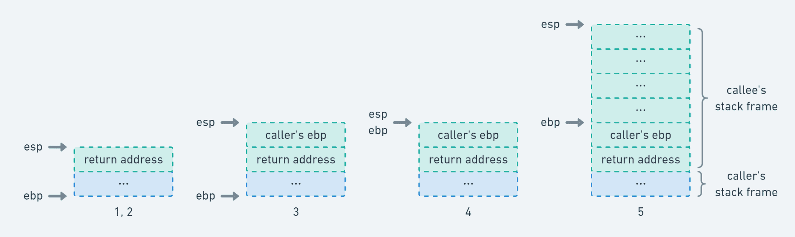
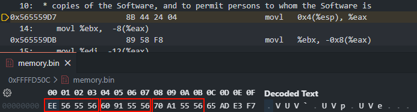

协程深入分析
1. 为什么需要协程
在游戏开发中，经常需要处理 需要等待的逻辑：
- 等待网络请求
- 等待动画播放
- 等待时间延迟
- 等待某个条件成立
最直观的实现方式就是 Update 轮询。
2. Update 轮询 vs Coroutine
Update 轮询
1 | private UnityWebRequest m_Request; |
特点：
- 每帧检查状态
- 需要自己维护状态
- 多任务时逻辑容易混乱
Coroutine
1 | IEnumerator RequestCoroutine(string url) |
特点：
yield return自动挂起- Unity 在条件满足时恢复执行
- 代码逻辑像同步代码一样
对比
| 对比项 | Update轮询 | Coroutine |
|---|---|---|
| 状态管理 | 手动维护 | Unity自动管理 |
| CPU开销 | 每帧检测 | 事件触发 |
| 代码复杂度 | 高 | 低 |
| 可读性 | 差 | 高 |
Coroutine 本质是把“等待逻辑”从 Update 中抽离出来。
3. Stackless Coroutine
Unity Coroutine 属于 Stackless Coroutine。
特点：
| 特性 | 描述 |
|---|---|
| 无独立栈 | 不保存函数调用栈 |
| 状态机实现 | 通过 switch 恢复执行 |
| 内存占用小 | 只有状态对象 |
| 调用限制 | 只能在 yield 函数内 |
Unity 协程本质依赖 C# 的 IEnumerator。
示例：
1 | IEnumerator Example() |
编译器会把它转换成 状态机。
编译后逻辑（简化）
1 | class ExampleCoroutine : IEnumerator |
可以看到：
yield return 实际是一个状态切换。
4. Stackful Coroutine
另一类协程叫 Stackful Coroutine。
代表语言：
- Go
- Lua
- Boost Coroutine
特点：
| 特性 | 描述 |
|---|---|
| 有独立栈 | 每个协程拥有自己的栈 |
| 保存寄存器 | 切换时保存CPU上下文 |
| 可在任意函数 yield | 不需要编译器生成状态机 |
栈帧结构

PS:最后一个划分有点问题
PS:esp执行return（第一个红框），esp+4指向变量1（第二个红框）协程主要是创建新的堆栈空间并切换，其他没啥差别
协程上下文保存
切换协程时需要保存：
- 寄存器
- 栈指针
- 返回地址
示例：
1 | movl (%esp), %ecx |
含义：
1 | 栈顶 |
保存 return address 后：
1 | 恢复时 ret |
5. Stackful vs Stackless
| 特性 | Stackful | Stackless |
|---|---|---|
| 栈 | 独立栈 | 无 |
| 实现 | 保存CPU上下文 | 编译器状态机 |
| 切换成本 | 高 | 低 |
| 灵活性 | 高 | 低 |
| 语言 | Go / Lua | C# / JS / Python |